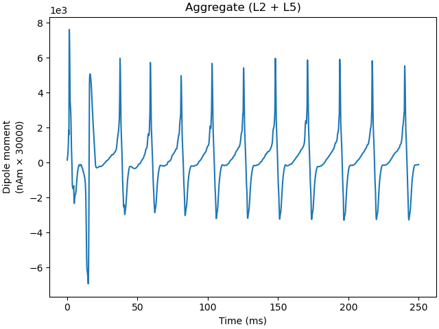

Note
Click here to download the full example code or to run this example in your browser via Binder
03. Simulate gamma rhythms¶
This example demonstrates how to simulate gamma rhythms using hnn-core.
Replicates: https://jonescompneurolab.github.io/hnn-tutorials/gamma/gamma
# Authors: Mainak Jas <mainak.jas@telecom-paristech.fr>
# Sam Neymotin <samnemo@gmail.com>
import os.path as op
Let us import hnn_core
import hnn_core
from hnn_core import simulate_dipole, read_params, Network
hnn_core_root = op.dirname(hnn_core.__file__)
Then we read the parameters file
params_fname = op.join(hnn_core_root, 'param', 'gamma_L5weak_L2weak.json')
params = read_params(params_fname)
print(params)
Out:
{
"L2Basket_Gauss_A_weight": 0.0,
"L2Basket_Gauss_mu": 2000.0,
"L2Basket_Gauss_sigma": 3.6,
"L2Basket_Pois_A_weight_ampa": 0.0,
"L2Basket_Pois_A_weight_nmda": 0.0,
"L2Basket_Pois_lamtha": 0.0,
"L2Pyr_Gauss_A_weight": 0.0,
"L2Pyr_Gauss_mu": 2000.0,
"L2Pyr_Gauss_sigma": 3.6,
"L2Pyr_Pois_A_weight_ampa": 0.0008,
"L2Pyr_Pois_A_weight_nmda": 0.0,
"L2Pyr_Pois_lamtha": 140.0,
"L2Pyr_ampa_e": 0.0,
"L2Pyr_ampa_tau1": 0.5,
"L2Pyr_ampa_tau2": 5.0,
"L2Pyr_apical1_L": 306.0,
"L2Pyr_apical1_diam": 4.08,
"L2Pyr_apicaloblique_L": 340.0,
"L2Pyr_apicaloblique_diam": 3.91,
"L2Pyr_apicaltrunk_L": 59.5,
"L2Pyr_apicaltrunk_diam": 4.25,
"L2Pyr_apicaltuft_L": 238.0,
"L2Pyr_apicaltuft_diam": 3.4,
"L2Pyr_basal1_L": 85.0,
"L2Pyr_basal1_diam": 4.25,
"L2Pyr_basal2_L": 255.0,
"L2Pyr_basal2_diam": 2.72,
"L2Pyr_basal3_L": 255.0,
"L2Pyr_basal3_diam": 2.72,
"L2Pyr_dend_Ra": 200.0,
"L2Pyr_dend_cm": 0.6195,
"L2Pyr_dend_el_hh2": -65.0,
"L2Pyr_dend_gbar_km": 250.0,
"L2Pyr_dend_gkbar_hh2": 0.01,
"L2Pyr_dend_gl_hh2": 4.26e-05,
"L2Pyr_dend_gnabar_hh2": 0.15,
"L2Pyr_gabaa_e": -80.0,
"L2Pyr_gabaa_tau1": 0.5,
"L2Pyr_gabaa_tau2": 5.0,
"L2Pyr_gabab_e": -80.0,
"L2Pyr_gabab_tau1": 1.0,
"L2Pyr_gabab_tau2": 20.0,
"L2Pyr_nmda_e": 0.0,
"L2Pyr_nmda_tau1": 1.0,
"L2Pyr_nmda_tau2": 20.0,
"L2Pyr_soma_L": 22.1,
"L2Pyr_soma_Ra": 200.0,
"L2Pyr_soma_cm": 0.6195,
"L2Pyr_soma_diam": 23.4,
"L2Pyr_soma_el_hh2": -65.0,
"L2Pyr_soma_gbar_km": 250.0,
"L2Pyr_soma_gkbar_hh2": 0.01,
"L2Pyr_soma_gl_hh2": 4.26e-05,
"L2Pyr_soma_gnabar_hh2": 0.18,
"L5Basket_Gauss_A_weight": 0.0,
"L5Basket_Gauss_mu": 2000.0,
"L5Basket_Gauss_sigma": 2.0,
"L5Basket_Pois_A_weight_ampa": 0.0,
"L5Basket_Pois_A_weight_nmda": 0.0,
"L5Basket_Pois_lamtha": 0.0,
"L5Pyr_Gauss_A_weight": 0.0,
"L5Pyr_Gauss_mu": 2000.0,
"L5Pyr_Gauss_sigma": 4.8,
"L5Pyr_Pois_A_weight_ampa": 0.0075,
"L5Pyr_Pois_A_weight_nmda": 0.0,
"L5Pyr_Pois_lamtha": 40.0,
"L5Pyr_ampa_e": 0.0,
"L5Pyr_ampa_tau1": 0.5,
"L5Pyr_ampa_tau2": 5.0,
"L5Pyr_apical1_L": 680.0,
"L5Pyr_apical1_diam": 7.48,
"L5Pyr_apical2_L": 680.0,
"L5Pyr_apical2_diam": 4.93,
"L5Pyr_apicaloblique_L": 255.0,
"L5Pyr_apicaloblique_diam": 5.1,
"L5Pyr_apicaltrunk_L": 102.0,
"L5Pyr_apicaltrunk_diam": 10.2,
"L5Pyr_apicaltuft_L": 425.0,
"L5Pyr_apicaltuft_diam": 3.4,
"L5Pyr_basal1_L": 85.0,
"L5Pyr_basal1_diam": 6.8,
"L5Pyr_basal2_L": 255.0,
"L5Pyr_basal2_diam": 8.5,
"L5Pyr_basal3_L": 255.0,
"L5Pyr_basal3_diam": 8.5,
"L5Pyr_dend_Ra": 200.0,
"L5Pyr_dend_cm": 0.85,
"L5Pyr_dend_el_hh2": -71.0,
"L5Pyr_dend_gbar_ar": 1e-06,
"L5Pyr_dend_gbar_ca": 60.0,
"L5Pyr_dend_gbar_cat": 0.0002,
"L5Pyr_dend_gbar_kca": 0.0002,
"L5Pyr_dend_gbar_km": 200.0,
"L5Pyr_dend_gkbar_hh2": 0.01,
"L5Pyr_dend_gl_hh2": 4.26e-05,
"L5Pyr_dend_gnabar_hh2": 0.14,
"L5Pyr_dend_taur_cad": 20.0,
"L5Pyr_gabaa_e": -80.0,
"L5Pyr_gabaa_tau1": 0.5,
"L5Pyr_gabaa_tau2": 5.0,
"L5Pyr_gabab_e": -80.0,
"L5Pyr_gabab_tau1": 1.0,
"L5Pyr_gabab_tau2": 20.0,
"L5Pyr_nmda_e": 0.0,
"L5Pyr_nmda_tau1": 1.0,
"L5Pyr_nmda_tau2": 20.0,
"L5Pyr_soma_L": 39.0,
"L5Pyr_soma_Ra": 200.0,
"L5Pyr_soma_cm": 0.85,
"L5Pyr_soma_diam": 28.9,
"L5Pyr_soma_el_hh2": -65.0,
"L5Pyr_soma_gbar_ar": 1e-06,
"L5Pyr_soma_gbar_ca": 60.0,
"L5Pyr_soma_gbar_cat": 0.0002,
"L5Pyr_soma_gbar_kca": 0.0002,
"L5Pyr_soma_gbar_km": 200.0,
"L5Pyr_soma_gkbar_hh2": 0.01,
"L5Pyr_soma_gl_hh2": 4.26e-05,
"L5Pyr_soma_gnabar_hh2": 0.16,
"L5Pyr_soma_taur_cad": 20.0,
"N_pyr_x": 10,
"N_pyr_y": 10,
"N_trials": 1,
"T_pois": 250.0,
"celsius": 37.0,
"dipole_scalefctr": 30000.0,
"dipole_smooth_win": 0.0,
"distribution_dist": "normal",
"distribution_prox": "normal",
"dt": 0.025,
"dt_evprox0_evdist": -1,
"dt_evprox0_evprox1": -1,
"events_per_cycle_dist": 2,
"events_per_cycle_prox": 2,
"f_input_dist": 10.0,
"f_input_prox": 10.0,
"f_max_spec": 100,
"f_stdev_dist": 20.0,
"f_stdev_prox": 20.0,
"gbar_L2Basket_L2Basket": 0.01,
"gbar_L2Basket_L2Pyr_gabaa": 0.007,
"gbar_L2Basket_L2Pyr_gabab": 0.0,
"gbar_L2Basket_L5Pyr": 0.0,
"gbar_L2Pyr_L2Basket": 0.0012,
"gbar_L2Pyr_L2Pyr_ampa": 0.0,
"gbar_L2Pyr_L2Pyr_nmda": 0.0,
"gbar_L2Pyr_L5Basket": 0.0,
"gbar_L2Pyr_L5Pyr": 0.0,
"gbar_L5Basket_L5Basket": 0.0075,
"gbar_L5Basket_L5Pyr_gabaa": 0.08,
"gbar_L5Basket_L5Pyr_gabab": 0.0,
"gbar_L5Pyr_L5Basket": 0.00091,
"gbar_L5Pyr_L5Pyr_ampa": 0.0,
"gbar_L5Pyr_L5Pyr_nmda": 0.0,
"gbar_evdist_1_L2Basket_ampa": 0.0,
"gbar_evdist_1_L2Basket_nmda": 0.0,
"gbar_evdist_1_L2Pyr_ampa": 0.0,
"gbar_evdist_1_L2Pyr_nmda": 0.0,
"gbar_evdist_1_L5Pyr_ampa": 0.0,
"gbar_evdist_1_L5Pyr_nmda": 0.0,
"gbar_evprox_1_L2Basket_ampa": 0.0,
"gbar_evprox_1_L2Basket_nmda": 0.0,
"gbar_evprox_1_L2Pyr_ampa": 0.0,
"gbar_evprox_1_L2Pyr_nmda": 0.0,
"gbar_evprox_1_L5Basket_ampa": 0.0,
"gbar_evprox_1_L5Basket_nmda": 0.0,
"gbar_evprox_1_L5Pyr_ampa": 0.0,
"gbar_evprox_1_L5Pyr_nmda": 0.0,
"gbar_evprox_2_L2Basket_ampa": 0.0,
"gbar_evprox_2_L2Basket_nmda": 0.0,
"gbar_evprox_2_L2Pyr_ampa": 0.0,
"gbar_evprox_2_L2Pyr_nmda": 0.0,
"gbar_evprox_2_L5Basket_ampa": 0.0,
"gbar_evprox_2_L5Basket_nmda": 0.0,
"gbar_evprox_2_L5Pyr_ampa": 0.0,
"gbar_evprox_2_L5Pyr_nmda": 0.0,
"inc_evinput": 0.0,
"input_dist_A_delay_L2": 5.0,
"input_dist_A_delay_L5": 5.0,
"input_dist_A_weight_L2Basket_ampa": 0.0,
"input_dist_A_weight_L2Basket_nmda": 0.0,
"input_dist_A_weight_L2Pyr_ampa": 0.0,
"input_dist_A_weight_L2Pyr_nmda": 0.0,
"input_dist_A_weight_L5Pyr_ampa": 0.0,
"input_dist_A_weight_L5Pyr_nmda": 0.0,
"input_prox_A_delay_L2": 0.1,
"input_prox_A_delay_L5": 1.0,
"input_prox_A_weight_L2Basket_ampa": 0.0,
"input_prox_A_weight_L2Basket_nmda": 0.0,
"input_prox_A_weight_L2Pyr_ampa": 0.0,
"input_prox_A_weight_L2Pyr_nmda": 0.0,
"input_prox_A_weight_L5Basket_ampa": 0.0,
"input_prox_A_weight_L5Basket_nmda": 0.0,
"input_prox_A_weight_L5Pyr_ampa": 0.0,
"input_prox_A_weight_L5Pyr_nmda": 0.0,
"numspikes_evdist_1": 1,
"numspikes_evprox_1": 1,
"numspikes_evprox_2": 1,
"prng_seedcore_evdist_1": 0,
"prng_seedcore_evprox_1": 0,
"prng_seedcore_evprox_2": 0,
"prng_seedcore_extgauss": 0,
"prng_seedcore_extpois": -3,
"prng_seedcore_input_dist": 0,
"prng_seedcore_input_prox": 0,
"record_isoma": 0,
"record_vsoma": 0,
"repeats_dist": 10,
"repeats_prox": 10,
"save_dpl": 0,
"save_figs": 0,
"save_spec_data": 1,
"sigma_t_evdist_1": 6.0,
"sigma_t_evprox_1": 2.5,
"sigma_t_evprox_2": 7.0,
"sim_prefix": "default",
"spec_cmap": "jet",
"sync_evinput": 1,
"t0_input_dist": 1000.0,
"t0_input_prox": 1000.0,
"t0_input_stdev_dist": 0.0,
"t0_input_stdev_prox": 0.0,
"t0_pois": 0.0,
"t_evdist_1": 2000.0,
"t_evprox_1": 2000.0,
"t_evprox_2": 2000.0,
"threshold": 0.0,
"tstop": 250.0,
"tstop_input_dist": 250.0,
"tstop_input_prox": 250.0
}
We’ll add a tonic Poisson-distributed excitation to pyramidal cells and
simulate the dipole moment in a single trial (the default value used by
simulate_dipole is n_trials=params['N_trials']).
net = Network(params)
weights_ampa = {'L2_pyramidal': 0.0008, 'L5_pyramidal': 0.0075}
synaptic_delays = {'L2_pyramidal': 0.1, 'L5_pyramidal': 1.0}
rate_constant = {'L2_pyramidal': 140.0, 'L5_pyramidal': 40.0}
net.add_poisson_drive(
'poisson', rate_constant=rate_constant, weights_ampa=weights_ampa,
location='proximal', synaptic_delays=synaptic_delays, seedcore=1079)
dpls = simulate_dipole(net)
Out:
joblib will run over 1 jobs
Building the NEURON model
[Done]
running trial 1 on 1 cores
Simulation time: 0.03 ms...
Simulation time: 10.0 ms...
Simulation time: 20.0 ms...
Simulation time: 30.0 ms...
Simulation time: 40.0 ms...
Simulation time: 50.0 ms...
Simulation time: 60.0 ms...
Simulation time: 70.0 ms...
Simulation time: 80.0 ms...
Simulation time: 90.0 ms...
Simulation time: 100.0 ms...
Simulation time: 110.0 ms...
Simulation time: 120.0 ms...
Simulation time: 130.0 ms...
Simulation time: 140.0 ms...
Simulation time: 150.0 ms...
Simulation time: 160.0 ms...
Simulation time: 170.0 ms...
Simulation time: 180.0 ms...
Simulation time: 190.0 ms...
Simulation time: 200.0 ms...
Simulation time: 210.0 ms...
Simulation time: 220.0 ms...
Simulation time: 230.0 ms...
Simulation time: 240.0 ms...
The network requires some time to reach steady state. Hence, we omit the first 50 ms in our time-frequency analysis.
We can plot the time-frequency response using MNE
import numpy as np
import matplotlib.pyplot as plt
from mne.time_frequency import tfr_array_morlet
fig, axes = plt.subplots(2, 1, sharex=True, figsize=(6, 6))
axes[0].plot(times, data)
sfreq = 1000. / params['dt']
freqs = np.arange(20., 100., 1.)
n_cycles = freqs / 8.
# MNE expects an array of shape (n_trials, n_channels, n_times)
data = data[None, None, :]
power = tfr_array_morlet(data, sfreq=sfreq, freqs=freqs,
n_cycles=n_cycles, output='power')
im = axes[1].pcolormesh(times, freqs, power[0, 0, ...], cmap='RdBu_r',
shading='auto')
axes[1].set_xlabel('Time (ms)')
axes[1].set_ylabel('Frequency (Hz)')
# Add colorbar
fig.subplots_adjust(right=0.8)
cbar_ax = fig.add_axes([0.85, 0.12, 0.03, 0.33])
fig.colorbar(im, cax=cbar_ax)
plt.show()
As a final exercise, let us try to re-run the simulation with a tonic bias applied to the L5 Pyramidal cells. Notice that the oscillation waveform is more regular, with less noise due to the fact that the tonic depolarization dominates over the influence of the Poisson drive. By default, a tonic bias is applied to the entire duration of the simulation.
net.add_tonic_bias(cell_type='L5_pyramidal', amplitude=6.)
dpls = simulate_dipole(net, n_trials=1)
dpls[trial_idx].plot()
Out:
joblib will run over 1 jobs
Building the NEURON model
[Done]
running trial 1 on 1 cores
Simulation time: 0.03 ms...
Simulation time: 10.0 ms...
Simulation time: 20.0 ms...
Simulation time: 30.0 ms...
Simulation time: 40.0 ms...
Simulation time: 50.0 ms...
Simulation time: 60.0 ms...
Simulation time: 70.0 ms...
Simulation time: 80.0 ms...
Simulation time: 90.0 ms...
Simulation time: 100.0 ms...
Simulation time: 110.0 ms...
Simulation time: 120.0 ms...
Simulation time: 130.0 ms...
Simulation time: 140.0 ms...
Simulation time: 150.0 ms...
Simulation time: 160.0 ms...
Simulation time: 170.0 ms...
Simulation time: 180.0 ms...
Simulation time: 190.0 ms...
Simulation time: 200.0 ms...
Simulation time: 210.0 ms...
Simulation time: 220.0 ms...
Simulation time: 230.0 ms...
Simulation time: 240.0 ms...
<Figure size 640x480 with 1 Axes>
Notice that the Layer 5 pyramidal neurons now fire nearly synchronously, leading to a synchronous activation of the inhibitory basket neurons. The resulting in a low-latency IPSP back onto the pyramidal cells. The duration of the IPSP is ~20 ms, after which the combined effect of the tonic bias and Poisson drive is to bring the pyramidal cells back to firing threshold, creating a ~50 Hz PING rhythm. This type of synchronous rhythm is sometimes referred to as “strong” PING.
Out:
<Figure size 640x480 with 1 Axes>
Total running time of the script: ( 1 minutes 52.454 seconds)